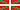
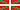

Cuevas de Urdax
Urdazubiko Lezeak - Cueva de Ikaburu - Cave of Urdazubi
Useful Information
| Location: |
Near Urdazubi.
(43.276818, -1.512095) |
| Open: |
JAN to FEB Sat, Sun, Hol 11-17. MAR to JUN Tue-Fri 11-17, Sat, Sun, Hol 11-18. JUL to AUG daily 10-19. SEP to OCT Tue-Fri 11-17, Sat, Sun, Hol 11-18. NOV to DEC Tue-Sun 10-18. Closed 25-DEC, 01-JAN, 06-JAN, 07-JAN. Exact time in online booking, online booking mandatory. [2024] |
| Fee: |
Adults EUR 7, Children (5-14) EUR 4, Children (0-4) free. [2024] |
| Classification: |
 Karst Cave Karst Cave
|
| Light: |
 Incandescent Incandescent
|
| Dimension: | T=14 °C, A=120 m asl. |
| Guided tours: |
D=40 min, L=350 m.
 


|
| Photography: | allowed without flash |
| Accessibility: | no |
| Bibliography: |
Norbert Casteret (1933):
Une nouvelle grotte a gravures dans les Pyrénées. La grotte d'Alquerdi,
XVe Congrès International d’Anthropologie et d’Archéologie Préhistoriques, Paris, 20–27 September 1931, 384–389.
Ana Cava, Irantzu Elorrieta, Ignacio Barandiarán (2009): El Gravetiense de la cueva de Alkerdi (Urdax, Navarra): análisis y contexto de su industria lítica Munibe, No. 60, pp 51-80. San Sebastián, 2009, ISSN 1132-2217, aranzadi.eus. pdf |
| Address: |
Cuevas de Urdazubi Urdax, Barrio Leorlas s/n, 31711 Urdazubi/Urdax, Tel: +34-948-599-241.
E-mail: |
| As far as we know this information was accurate when it was published (see years in brackets), but may have changed since then. Please check rates and details directly with the companies in question if you need more recent info. |
|
History
| 1808 | cave used as a refuge by people fleeing the battles of the War of Independence. |
| 1928 | Zelaieta 1 cave discovered during quarry works. |
| 1930 | Cave of Berroberria and Cave of Alkerdi discovered and first explored by Norbert Casteret. |
| 1939 | Cave of Berroberria excavated by the Lorianako Markesak (Marquis of Loriana), survey of the cave, distinguished six stratigraphic levels. |
| 1959-1964 | Cave of Berroberria excavated by J. Maluquer de Motesek, his materials are in the Museum of Navarra. |
| 1965 | Mármoles del Baztán SA given permission to exploit the quarry in Zelaieta. |
| 1965 | show cave opened to the public. |
| 1974-1975 | exploration by the speleology department of the Vianako Printzea Erakundeko (Prince of Viana Institution). |
| 1977-1994 | Cave of Berroberria excavated by Professor I. Barandiarán and A. Cava. |
| 1995 | Government of Navarre declares the Berroberria cave archaeological zone as a Cultural Property, and establishes a protective environment within a radius of one hundred meters. |
| 1996 | Alkerdi and Berroberria caves closed. |
| 1999 | General Urban Plan of Urdazubi was approved. |
| 2008 | mining temporarily stopped due to the economic crisis. |
| 2011 | souvenir store at the cave opened. |
| 2013 | permission for the company Marmoles de Baztan extended to exploit the quarry for another 30 years. |
| 15-JUL-2014 | great explosion in the quarry, rock flying to the village. |
Description
The Cuevas de Urdax are located at the French-Spanish border, in the Basque country, and the basque name of the caves is Urdazubiko Lezeak. The name actually means "Caves of Urdax", which is a small town with 400 inhabitants located in a heavily karstified area. The Basque name of Urdax is Urdazubik and translates "water and bridge". The plural is a result of the fact that there are numerous caves, some of them are different entrances of the same cave system while some are different caves.
The show cave is actually called Cueva de Ikaburu, it is the only cave in the area which is open to the public. However, it is generally called Cuevas de Urdazubi Urdax or Gruta prehistórica de Ikaburu Urdax. It is a river cave, the cave river is called Urtxuma. The tour shows the extraordinary speleothems of the cave. Also, the legends of the smugglers are told, which once used the cave. The cave was also used as a hideout by soldiers during the War of Independence and the Carlist conflicts.
The area has numerous legends of witches, and Ikaburu shares some of them. It is said that the cave was once the home of lamia, mythological monsters which had the head and torso of a woman and a fishtail. They are seen as demons or witches.
The caves of the area were obviously known to man for a long time, and used as shelters. The locals were probably aware of their existence, but the first who actually cared and explored them was the famous speleologist Norbert Casteret in 1930. He explored the two cave entrances, and found pieces of flint, pieces of horse, bovid, and boar bones and mollusk shells. He also discovered six Paleolithic rock engravings on a cave wall in Alkerdi Cave. He published his discoveries in 1933, on the XV Congres International d’Anthropologie et d’Archeologie Prehistoriques in Paris.
Other caves of Urdax are the two prehistoric caves, the Cave of Alkerdi and the Cave of Berroberría. Both are shelters which are closed to the public by iron bars, but it's possible to visit them and have a look through the bars. The caves contain remains from a period which is called Navarre Period, and actually these are the only two locations were remains from this period were discovered. As a result, they are designated as Heritage of Cultural Interest. There are seven distinct periods of occupation, starting with the Magdalenian. Main habitation during Azilian, Mesolithic and Bronze Age.
The caves are developed in Lower Cretaceous reef-limestone. The limestone rock has been quarried since the early 20th century, which caused both the discovery of caves and the destruction of caves by explosions. In the first decades the quarrying was on a low scale, until the company Mármoles del Baztán SA was given permission to exploit the quarry in Zelaieta. In 1975, technicians from the Department of Public Works and members of the Archeology Committee of the Prince of Viana Institute examined the quarry. They reported the destruction of three caves, Zelaieta 1, Zelaieta 2 and Harrobiko leizea, and numerous other karst features. Nothing happened until finally in 1995, the Government of Navarre declared the Berroberria cave archaeological zone as a Cultural Property, and established a protective environment within a radius of one hundred meters. It seems the operator of the quarry was not impressed, and when in 1999 the General Urban Plan of Urdazubi was approved, they were asked to stop blasting. It seems this was not done, the work finally ended in 2008 due to the economic crisis for several years. Finally, in 2013 the Government of Navarre extended the permission to exploit the quarry for another 30 years to the company Marmoles de Baztan. This new exploitation was stopped by a big bang, in 2014 there was such a big blast that rocks were thrown on the nearby village. Zelaieta 3 cave collapsed and was almost completely destroyed. However, this event was obviously massive enough to let even the densest politician realize that the quarrying was a danger for archaeological remains and the locals alike. Finally, the locals and the politicians stopped the illegal quarrying. The City Council fined the company which went in liquidation, and they were able to collect only 824 Euros of the fine of 150,000 Euros.
This whole story is depressing and unfortunately, quite typical.
First, nothing happens, when finally a law is made or cultural heritage is protected, the industry ignores it, and again nothing happens.
They are awarded for breaking the law by extending the permission.
The only way to stop them is if they accidentally shoot their own foot.
And if they are fined for breaking the law and destroying cultural heritage, the amount is ridiculously low and never collected because they go into liquidation and the money which was earned is already gone.
The growing awareness of these mechanisms is discussed here:
 Destroyed Caves.
Destroyed Caves.
To visit the cave, you must reserve at least 24 hours in advance via online booking. It seems this was introduced during the Corona pandemic, and was afterwards left this way. As a result, the given open hours are just a hint, depending on the frequency of the tours, the shop and ticket office might be closed except for a short time before the tour starts. It's essential to book ahead and pay online, as far as we know, there is no possibility to buy a ticket on site. It is very important to be on time.
 Search Google for "Cuevas de Urdax"
Search Google for "Cuevas de Urdax" Google Earth Placemark
Google Earth Placemark OpenStreetMap
OpenStreetMap Alkerdi-Berroberria - Wikipedia (visited: 08-JAN-2024)
Alkerdi-Berroberria - Wikipedia (visited: 08-JAN-2024) Cuevas Urdax - Urdazubiko lezeak, official website (visited: 06-MAR-2011)
Cuevas Urdax - Urdazubiko lezeak, official website (visited: 06-MAR-2011) Index
Index Topics
Topics Hierarchical
Hierarchical Countries
Countries Maps
Maps Search
Search